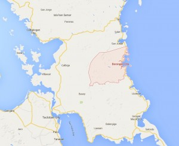

Borongan was just a small town back in 1600 and was called as Guiborongani. It was called on its present name due to the heavy fog that usually covered the place.
Borongan developed because of the help of the religious missions established by the Jesuits during the 1604-1768, and the Franciscans from 1768 to 1868.
During the Philippine Revoluton, Borongan served as the site for the uprisings of the Pulahanes. Public officials were also first appointed in the place and was called as “president” and “vice president”. Whe the Japanese left the country, the town was organized into a municipality, led by a mayor and vice mayor. It was then made as the capital of Eastern Samar.
On June 21, 2007, Borongan became the first city in Eastern Samar.

Borongan is bounded on the north by the municipality of San Julian, in the south by the municipality of Maydolong; in the west by th Samar municipalities of Hinabanagan, Calbiga, Pinabacdao and Basey; and in the east by the Pacific Ocean.
According tot he 2007 census conducted by the CBMS, the City of Borongan has a total population of 59,354 people whose the majority of them speaks Waray-Waray as their common language. Much of the population can speak Tagalog and English.